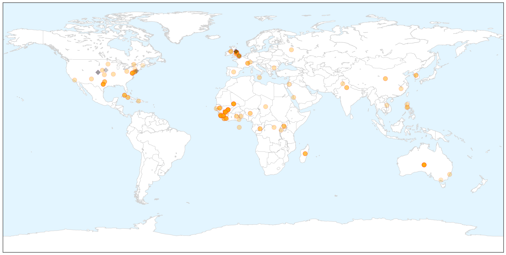

Unknown
30-Day Web Trend
1 alerts, 0 warnings

30-Day Twitter Trend
1 alerts, 0 warnings

Article Locations


Article Confidences

Top Articles:
- 0.996
- Madagascar plague outbreak kills 40 since August
- 0.994
- Plague outbreak kills 40 people in Madagascar - National
- 0.992
- 40 killed in Madagascar plague outbreak
- 0.985
- Burden of typhoid fever in low-income and middle-income countries: a systematic, literature-based update with risk-factor adjustment
- 0.984
- Madagascar plague outbreak kills 40
- 0.982
- WHO: Plague outbreak kills 40 in Madagascar
- 0.978
- UPDATE 1-Plague in Madagascar has killed 40 people out of 119 cases -WHO
- 0.976
- 2 paralysis cases linked to enterovirus seen in North Texas
- 0.971
- Portugal Legionnaires' outbreak kills 10, no new infections seen
- 0.967
- Forget About Sneezes, Here Are 4 Common Social Interactions That Result In Germy Exchange
- 0.959
- WHO: Madagascar hit by plague outbreak, 40 dead
- 0.957
- 40 people dead of bubonic plague in Madagascar
- 0.954
- Quarantine order issued to stop movement of Oahu pigs
- 0.951
- Plague in Madagascar, Plague outbreak in Madagascar
- 0.944
- Plague outbreak kills 40 in Madagascar
- 0.937
- Plague outbreak kills 40 in Madagascar
- 0.920
- Oklahoma school district closed due to increased mononucleosis in community
- 0.917
- Chicago Tribune
- 0.917
- Chicago Tribune
- 0.917
- Chicago Tribune
- 0.917
- Chicago Tribune
- 0.917
- Chicago Tribune
- 0.917
- Chicago Tribune
- 0.908
- Plague kills 40 in Madagascar
- 0.864
- Mononucleosis outbreak closes Oklahoma school district
- 0.811
- Germany reports second case of bird flu - H5N8 found in wild bird
- 0.807
- Germany reports second case of bird flu
- 0.794
- Latest news on sustainable development, features, opinions, interviews with NGO leaders and multimedia from India and South Asia
- 0.784
- Salmonella Outbreak Affecting 10 States
- 0.773
- Ongoing Multistate Salmonella Outbreak Linked to Sprouts
- 0.749
- WHO says Ebola outbreak 'stable' in Guinea
- 0.738
- HPV vaccination recommended for those at risk
- 0.716
- Publisher's Platform: One, Two, Three Sprouts, You’re Out
- 0.660
- Health Hub: Watch out for shortness of breath
- 0.624
- LNP to introduce Wait Time Guarantee for elective patients
- 0.624
- LNP to introduce Wait Time Guarantee for elective patients
- 0.618
- New bird flu case in Germany
- 0.584
- New bird flu case in Germany, news, Health News, AsiaOne YourHealth
- 0.560
- More than half TB cases undetected
- 0.549
- Be a Proactive Patient: Protect Yourself from DVT
- 0.524
- More doctors posted in all neonatal care centres
- 0.505
- TV chef Ross Burden killed by hospital bug
- 0.502
- HPV legislation doesn't increase vaccination among adolescents
Top Tweets:
-
No tweets found for Nov 22, 2014
Ebola
30-Day Web Trend
0 alerts, 0 warnings

30-Day Twitter Trend
1 alerts, 0 warnings

Article Locations

X

Article Confidences

Top Articles:
- 1.000
- Latest Ebola News: WHO declares Democratic Republic of Congo Ebola-free
- 1.000
- New Case Confirmed, 2 More Suspected
- 1.000
- Bishop at UN Ebola meeting warns against 'acts of discrimination'
- 1.000
- REGION: Staying safe while treating Ebola
- 1.000
- the edge of knowledge
- 1.000
- Voices from the front lines: How nurses feel about Ebola
- 1.000
- Hope in Liberia, anxiety in Mali as Ebola battle rages
- 1.000
- Mali: New Ebola case confirmed, 2 more suspected
- 1.000
- New Ebola case confirmed in Mali
- 1.000
- Ebola crisis now 'stable' in Guinea, WHO says
- 1.000
- Ebola: Separating science from myth
- 1.000
- Hope in Liberia, anxiety in Mali as Ebola battle rages
- 1.000
- Ebola Silently Rages On
- 1.000
- World Health Organization: Democratic Republic of Congo is Ebola-free
- 1.000
- Machel urges African leaders to seek help on continent
- 0.999
- Ebola-infected Cuban doctor brought to Geneva
- 0.999
- Quarantining man from Liberia right step: expert
- 0.999
- UN warns Ebola still far from over
- 0.999
- Ebola: Can It End Next Summer?
- 0.999
- Liberia Hopeful of Halting Ebola by Year End
- 0.999
- CDC Says Cases Of Ebola Virus In Liberia Decreasing, Thanks To Global Effort
- 0.999
- We can end Ebola in 2015, says Ban
- 0.999
- Ebola Outbreak Could Be Curbed By 2015, Says UN Secretary General Ban Ki-Moon
- 0.999
- Ebola death toll rises to 5,459; Cuban doctor 'stable'
- 0.999
- Hope in Liberia, worry in Mali as Ebola battle continues in West Africa
- 0.999
- TNS - The News on Sunday
- 0.999
- Mali confirms new Ebola case; toll 5
- 0.999
- In Presidential Statement, Security Council Hails Successes of Scaled-up Ebola Response, Calls for Stronger Coordination to Identify Gaps, Trace Contacts - Liberia
- 0.999
- Mali records new Ebola case, linked to dead nurse
- 0.998
- Ebola death toll rises but Cuban doctor is ‘stable’
- 0.998
- No time to lose in battle against Ebola, says UN's Ban Ki-moon
- 0.998
- New York Patient Returning from West Africa Negative for Ebola But Remains Confined
- 0.998
- UN Hopeful Of Ebola Outbreak's End By Mid-2015
- 0.997
- Ebola cases no longer rising in Guinea, Liberia, UN health agency reports
- 0.997
- Hope in Liberia, anxiety in Mali as Ebola battle rages
- 0.997
- Outbreak of the plague in Madagascar leaves dozens dead
- 0.997
- NHS Staff Head To Sierra Leone To Treat Ebola
- 0.996
- Human Trail of Experimental Ebola Vaccine Begins
- 0.996
- Ebola won’t get you out of class
- 0.996
- Outbreak of the plague in Madagascar leaves dozens dead
- 0.996
- Outbreak of the plague in Madagascar leaves dozens dead
- 0.996
- Cuban doctor with Ebola in stable yet worrying condition
- 0.996
- Outbreak of the plague in Madagascar leaves dozens dead
- 0.996
- Outbreak of the plague in Madagascar leaves dozens dead
- 0.996
- UK Sends 30 Volunteers to West Africa to Help Contain Ebola
- 0.996
- CORRECTED-(OFFICIAL)-INTERVIEW-Saudi Arabia tackles MERS virus, still hunting source
- 0.995
- Ebola: Ban hopeful of outbreak’s end by mid-2015
- 0.995
- Ban Ki-moon: Ebola outbreak can be ended in 2015 - Panorama
- 0.995
- New Ebola Case Confirmed, 2 More Suspected
- 0.995
- NHS volunteers deployed to fight Ebola in Sierra Leone - Sierra Leone
Showing top 50 articles...
Top Tweets:
- 0.779
- Ebola It’s the public health measures that will end the outbreak not treatment as important as treatment is. Do your part to StopEbola
- 0.725
- RT: WHO says ~ 500 people in Mali & Guinea have been exposed to an Ebola infected imam whose case had been misdiagnosed ht…
- 0.683
- RT: Still not doing enough vs Ebola. 533 new cases last wk in S. Leone–most of outbreak. In Guinea village at heart of o…
- 0.674
- RT: EbolaResponse: Here's latest map of Ebola outbreak in WestAfrica with stats for Liberia Guinea & Sierra Leone http://t.co/U5M…
- 0.674
- RT: EbolaResponse: Here's latest map of Ebola outbreak in WestAfrica with stats for Liberia Guinea & Sierra Leone http://t.co/U5M…
- 0.627
- RT: ICYMI: MSF evacuates staff worker from Mali to Madrid. Spanish medical worker had Ebola exposure. Fingers crossed. ht…
- 0.583
- Back in UK for 4 days then straight back to W Africa for 6 weeks. Sad to be away from home for Christmas but the ebola battle continues!